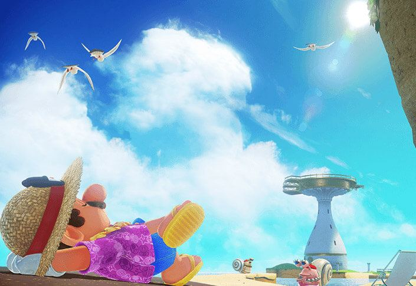

Complément
Pays de la Mer
L'essentiel
- Boss : Bombopode, Duc de Pétillance.
- Graines : elles ne poussent qu'arrosées.
- Tenue requise : aloha (n° 42) ; la n° 38 demande 100 échanges de beach-volley.

Le Pays de la Mer · © Nintendo
Objectif
Pétillance est une station balnéaire posée sur une mer turquoise, où l'eau n'est pas de l'eau mais un élixir pétillant que les Pétillopodes — des mollusques distingués — considèrent comme un trésor national. Au centre de la baie se dresse la tour de la Flûte, une immense coupe de verre que les Broodals ont vidée en bouchant ses quatre sources.
71 lunes de puissance, et seulement 10 exigées pour repartir. C'est aussi le pays où tu passeras le plus de temps sous l'eau, et celui du Giclopode, l'octopode dont le jet d'eau sert à la fois de propulseur et d'arme.
Ce qu'il faut accomplir :
- Déboucher les quatre sources d'élixir : le canyon Rokkiroul, le goulot de pierre, l'île thermale et le phare. Chacune donne une lune, puis un interrupteur rouge à enfoncer.
- Battre Bombopode, Duc de Pétillance, le poulpe géant qui garde la baie.
- Réunir 10 lunes : les quatre bouchons et la multilune t'en donnent 7, il t'en faut 3 de plus.
Itinéraire
📍 La zone en images : Pays de la Mer en vidéo — soluce illustrée sur Millenium, en français.
🗺️ Carte interactive : le Pays de la Mer sur la carte IGN (en anglais), avec chaque lune placée.
La baie est un grand cercle. L'Odyssée se pose sur la plage du sud, et les quatre sources sont aux quatre coins.
- La plage et la station balnéaire, au sud : l'Odyssée, le terrain de beach-volley, la boutique ambulante mauve, le chien, le toit de la station où se plantent les graines.
- Le canyon Rokkiroul, à l'est : les rochers qui dévalent, la première source.
- Le goulot de pierre : le piton rocheux au milieu de la baie, atteint au jet de Giclopode.
- L'île thermale, au nord-est : l'île couverte de lave qu'il faut éteindre à l'eau.
- Le phare, au nord-ouest : le puits, la grotte, le tunnel aux murènes, et le sommet avec son Planodon.
- La tour de la Flûte, au centre : le temple, ses quatre jets, et son sommet.
- La grande faille, tout au nord : la crevasse sous-marine, le Sphynx et ses deux quiz.
- Le boulevard sous-marin et le dédale des profondeurs : les tunnels du fond de la baie.
Les deux chapimorphoses du pays :
- Le Giclopode. Il aspire l'eau et la recrache. Son jet le propulse : au sol, il fait du surplace en l'air ; en vol, il se dirige. Il fait le plein dans n'importe quel bassin et il éteint la lave. C'est la clé de trois des quatre sources.
- Le poisson. Comme au pays du Lac, il supprime la jauge d'oxygène et permet d'explorer les tunnels du fond.
Déroulé pas à pas
Les quatre bouchons
Le bouchon du canyon — à l'est de l'Odyssée. Remonte le canyon Rokkiroul en évitant les rochers qui dévalent, puis détruis le mur de caisses : la lune libère l'interrupteur.
Le bouchon du goulot de pierre — chapimorphose un Giclopode dans la baie et propulse-toi sur le piton rocheux au jet d'eau.
Le bouchon de l'île thermale — en Giclopode, propulse-toi au-dessus de l'île couverte de lave, au nord-est. En vol stationnaire, envoie des jets d'eau pour faire disparaître la lave, puis plonge dans l'eau révélée.
Le bouchon du phare — va sur l'île du nord-ouest et plonge au fond du puits en charge au sol. Dans la grotte du phare, chapimorphose un poisson et traverse le tunnel en évitant les murènes qui jaillissent du sol et des murs. Prends le tuyau vert du bout, puis la lune au sommet du phare.
Les quatre lunes prises, enfonce les quatre interrupteurs rouges d'une charge au sol. Le boss apparaît.
Bombopode, Duc de Pétillance
Un poulpe géant qui se combat entièrement en Giclopode.
- Chapimorphose un Giclopode dans la baie.
- Reste en hauteur autant que possible : tu ne redescends dans l'eau que pour faire le plein.
- Place-toi au-dessus du poulpe et, en vol stationnaire, envoie-lui de l'eau sur le crâne.
- Trois fois, et c'est fini. Tu réapparais au sommet de la Flûte, à côté de la multilune La flûte est pleine !
⚠️ Surveille ta réserve d'eau. Le jet du Giclopode se vide, et sans eau il tombe. Le réflexe : un aller-retour au bassin entre chaque attaque.
Repartir
10 lunes exigées, 7 données par l'histoire. Les trois plus rapides : Oubliée par la houle (n° 17), Sur la falaise qui surplombe la plage (n° 6) et Affaire en or à Pétillance (n° 36).
Destination suivante : le pays de la Cuisine.
Quêtes et lieux
La plage et la station balnéaire
| Ce qu'on y trouve | Lune |
|---|---|
| Le terrain de beach-volley | n° 37 (15 échanges) et n° 38 (100 échanges) |
| Le toit de la station | les quatre pots où planter les graines (n° 23 à 26) |
| La boutique ambulante mauve | deux panoplies, deux souvenirs, une vignette |
| Le chien, juste au nord de l'Odyssée | n° 29 |
| La fleur de feu de la côte, près du terrain | n° 31 |
| Le tuyau vert dans la falaise, à l'ouest de l'Odyssée | n° 41 |
| Le bras d'eau à l'ouest | les coffres piégés de la n° 22 |
| Le parasol et l'arche rocheuse de l'ouest | la fusée de la mer de nuages (n° 43 et 44) |
| Le bâtiment du sud-ouest | la scène de danse hula (n° 42), gardée par un gastéropode |
| La falaise au sud, à l'est de la station | la photo d'indice (n° 50) |
| Le passage du sud-ouest contre la falaise | la gorge empoisonnée (n° 45 et 46) |
Les quatre coins de la baie
| Lieu | Ce qu'on y trouve |
|---|---|
| Le canyon Rokkiroul (est) | la première source, la graine de la plate-forme haute (n° 24), le scintillement derrière la falaise (n° 18), les Goombas à empiler et Goombette (n° 32) |
| L'île thermale (nord-est) | la troisième source, la graine du bras de sable (n° 25), la porte à chapeau du sud et sa course contre la lave (n° 47 et 48), le petit bassin au robot rouillé (n° 58), le départ de la course experte (n° 67) |
| Le phare (nord-ouest) | la quatrième source, le Planodon du sommet (n° 15, 33), le poteau de la n° 59, l'épouvantail de la n° 64, le puits et son couloir obscur (n° 39), les coraux bleus du nord-est (n° 61) |
| La tour de la Flûte (centre) | le coffre sous le temple (n° 21), les quatre jets qui montent au sommet où attend Peach (n° 52), le sommet et ses rebords (n° 54, 55), la mouette (n° 62), le lapin (n° 63) |
| La grande faille (nord) | le Sphynx et ses deux énigmes (n° 35, 40), la graine du corail bleu (n° 26), le passage de la paroi nord (n° 12), les quatre bosses en triangle (n° 19), le monticule rocheux de l'est (n° 60) |
| Le boulevard sous-marin | les tunnels du fond (n° 10, 56, 57, 65) |
| Le dédale des profondeurs | les quatre tuyaux verts du centre-ouest de la baie (n° 8 et 9) |
| Le labyrinthe pivotant | tunnel sous-marin près de la n° 64 : deux lunes, dont une à cinq mécanismes (n° 70 et 71) |
| Le tuyau lunaire des îles de l'est | le Pikonio et les boulets explosifs (n° 68 et 69) |
Les personnages
| Personnage | Où | Ce qu'il donne |
|---|---|---|
| Bombopode, Duc de Pétillance | dans la baie | la multilune de l'histoire |
| Le Sphynx | au fond de la grande faille | la lune n° 40 (réponse : Pétillance) puis la n° 35 (quatre, attaquer, une tenue aloha, pour me questionner) |
| Capitaine Toad | campement surélevé à l'est, le long de la falaise | la lune n° 34, à atteindre en Giclopode |
| Dorrie (la mauve) | nord-est du pays | la lune n° 14, sous son abdomen |
| Dorrie dorée | près du phare | la lune n° 15 en planant dessus, et sur son dos le Pétillopode qui vend la lune n° 36 |
| Goombette | promontoire du canyon Rokkiroul | la lune n° 32, en pile de cinq Goombas |
| Le Pétillopode du pied de la Flûte | sur le sable | la lune n° 33, si tu arrives en Planodon |
| Le gastéropode de la scène | bâtiment du sud-ouest | l'accès à la danse hula, en Tenue aloha |
| Le chien de la plage | au nord de l'Odyssée | la lune n° 29 |
| Le Koopa des courses | loin au nord pour la standard, île thermale pour l'experte | les lunes n° 51 et n° 67 |
| Peach | sommet de la tour de la Flûte | la lune n° 52 |
La boutique Crazy Cap
C'est une boutique ambulante mauve, sur la plage. Les pièces locales ont la forme de coquilles Saint-Jacques, et il y en a 100. Deux panoplies : aloha et marin, plus le Bicorne et la Tenue de pirate en pièces d'or.
⚠️ La Tenue aloha est obligatoire pour la lune n° 42.
Butin exhaustif
Préfixes de disponibilité :
- [Début] — dès l'arrivée dans le pays.
- [4 bouchons] — après les quatre lunes des sources.
- [Bombopode] — après la multilune La flûte est pleine !
- [Autre pays] — se débloque depuis un autre pays.
- [Bowser] — après avoir vaincu Bowser au pays de la Lune.
- [Roche] — après avoir ouvert la roche lunaire du pays.
| Nom exact | Type | Où / comment l'obtenir | Utilité |
|---|---|---|---|
| Le bouchon du goulot de pierre | Lune | [Début] Chapimorphose un Giclopode dans la baie et propulse-toi au jet d'eau sur le piton rocheux | Une des quatre sources |
| Le bouchon du phare | Lune | [Début] Plonge dans le puits du nord-ouest en charge au sol, traverse le tunnel en poisson en évitant les murènes, prends le tuyau vert et monte au sommet du phare | Une des quatre sources |
| Le bouchon de l'île thermale | Lune | [Début] En Giclopode, propulse-toi au-dessus de l'île couverte de lave, au nord-est, et arrose-la en vol stationnaire jusqu'à la faire disparaître. Puis plonge | Une des quatre sources |
| Le bouchon du canyon | Lune | [Début] Remonte le canyon Rokkiroul, à l'est de l'Odyssée, en évitant les rochers, et détruis le mur de caisses | Une des quatre sources |
| La flûte est pleine ! | Multilune vaut 3 | [4 bouchons] Bats Bombopode, Duc de Pétillance en Giclopode : reste en hauteur, arrose-lui le crâne en vol stationnaire, trois fois | Remplit la tour de la Flûte |
| Sur la falaise qui surplombe la plage | Lune | [Début] En Giclopode, propulse-toi dans la petite mare de la falaise derrière l'Odyssée pour faire le plein, puis repropulse-toi légèrement vers le sud-est jusqu'au promontoire | Une des trois lunes libres les plus rapides |
| Propulsion à jet d'eau dans le tunnel | Lune | [Début] En Giclopode, traverse la plage jusqu'à la mare à l'intérieur de la falaise, à l'ouest de l'Odyssée, puis propulse-toi vers le haut et vers la droite | Carburant de l'Odyssée |
| Trésor du dédale des profondeurs | Lune | [Début] Au fond de l'eau au centre-ouest de la baie, repère les quatre tuyaux verts. Entre dans celui du sud-ouest, saute en haut à gauche pour révéler des blocs invisibles, ressors, puis entre dans celui du nord-est : descends vers la gauche pour atterrir sur les blocs révélés | Carburant de l'Odyssée |
| Cache du dédale des profondeurs | Lune | [Début] Même dédale. Entre dans le tuyau le plus au sud, grimpe à gauche, élimine la Koopa rouge et envoie sa carapace vers la gauche pour casser un petit bloc en contrebas. Passe accroupi dans le passage dissimulé | Carburant de l'Odyssée |
| Tunnel du boulevard sous-marin | Lune | [Début] En poisson, au nord-ouest du phare, emprunte le tunnel sous-marin et fais une attaque tournoyante pour détruire les blocs au sol à mi-chemin : la lune est au fond de la fosse | Carburant de l'Odyssée |
| Dans le secret du raccourci | Lune | [Début] En poisson, emprunte le tunnel rempli de pièces au nord du pays, juste au sud-ouest du départ de la course Koopa : la lune est à mi-chemin | Carburant de l'Odyssée |
| Une brèche dans la grande faille | Lune | [Début] Dans la grande crevasse sous-marine du nord, en poisson, emprunte le passage de la paroi nord, puis descends vers la source des bulles | Carburant de l'Odyssée |
| Dans un sombre repaire | Lune | [Début] Tout au nord-est du pays, au nord-est de l'île thermale, nage dans le tunnel au bout duquel t'attend une murène et tourne à droite | Carburant de l'Odyssée |
| Merci, Dorrie ! | Lune | [Début] Nage sous le grand dinosaure mauve qui patrouille au nord-est : la lune est sous son abdomen | Carburant de l'Odyssée |
| Salut, Dorrie ! | Lune | [Bombopode] Au sommet du phare, chapimorphose le Planodon et plane vers le dinosaure doré qui nage non loin : la lune est en hauteur au-dessus de sa tête, à prendre au vol | Carburant de l'Odyssée |
| Sous un toit menaçant | Lune | [Début] Tout au nord, sous l'eau, juste au nord du départ de la course Koopa : repère la zone où les algues patrouillent au plafond et fais une charge au sol sur la bosse scintillante. Débarrasse-toi des algues avant d'aller la chercher | Carburant de l'Odyssée |
| Oubliée par la houle | Lune | [Début] À l'est, dans un petit bassin au cœur des récifs : charge au sol dans le faible niveau d'eau | Une des trois lunes libres les plus rapides |
| Enfouie derrière le canyon | Lune | [Début] À l'est du canyon Rokkiroul, derrière la falaise : charge au sol sur l'endroit qui scintille, sur le passage des boulets piquants en hauteur | Carburant de l'Odyssée |
| Confins septentrionaux de Pétillance | Lune | [Début] En poisson, nage à l'extrême nord du pays, au-dessus de la faille : tu trouves trois bosses en triangle autour d'une plus grosse. Libère-toi pour faire une charge au sol sur chacune des quatre à mesure qu'elles scintillent, et reprends le poisson entre chaque pour te déplacer et écarter les algues | Carburant de l'Odyssée |
| Cache-cache au fond de la mer | Lune | [Début] Passe la porte à chapeau des profondeurs, au nord du phare, lance Cappy sur la bosse scintillante qui se déplace, puis charge au sol | Carburant de l'Odyssée |
| Coffre du palais de la Flûte | Lune | [Début] En poisson, nage sous le temple de la Flûte, au centre du pays : un coffre attend dans une alcôve | Carburant de l'Odyssée |
| Trésor piégé dans la baie | Lune | [Début] Plonge dans le bras d'eau à l'ouest de l'Odyssée, nage sous la paroi jusqu'à une petite grotte, et ouvre les coffres dans cet ordre : haut, gauche, droite, bas | Carburant de l'Odyssée ; se tromper relance l'énigme |
| La graine de la baie a fleuri ! | Lune | [Début] La graine dorée est dans le bras d'eau juste à l'est de la station balnéaire. Plante-la sur le toit de la station, puis arrose le pot avec le jet vertical d'un Giclopode jusqu'à ce que le fruit doré mûrisse | Carburant de l'Odyssée ; ici les graines s'arrosent, elles n'attendent pas |
| La graine du canyon a fleuri ! | Lune | [Début] La graine est sur la plate-forme la plus haute à l'est du canyon Rokkiroul, contre la falaise. Même pot, même arrosage | Carburant de l'Odyssée |
| La graine de l'île thermale a fleuri ! | Lune | [Début] La graine est sur un bras de sable juste à l'est de l'île thermale. Même pot, même arrosage | Carburant de l'Odyssée |
| La graine de la grande faille a fleuri ! | Lune | [Début] La dernière graine est sur un corail bleu au fond de la grande faille, au nord. Même pot, même arrosage | Carburant de l'Odyssée |
| Pays de la Mer : athlétic-tac 1 | Lune | [Début] Repère la faille étroite au sud de l'île thermale, descends en poisson, charge au sol sur le bouton rouge, et passe vite dans le tuyau 2D : enchaîne les sauts sans tomber vers la Koopa | Carburant de l'Odyssée |
| Pays de la Mer : athlétic-tac 2 | Lune | [Bombopode] Sous l'eau au nord du temple de la Flûte, l'épouvantail est juste à l'est d'un banc de corail bleu. Lance Cappy dessus puis enchaîne des brasses successives — le geste équivalent au saut en longueur sous l'eau | Carburant de l'Odyssée |
| Trouvée par toutou sur la plage ! | Lune | [Bombopode] Lie-toi d'amitié avec le chien juste au nord de l'Odyssée en déterrant ce qu'il te désigne, puis mène-le vers les gros rochers de l'ouest, près du bras d'eau | Carburant de l'Odyssée |
| Éclats de lune dans la mer | Lune | [Début] Au nord du canyon Rokkiroul, nage vers l'épouvantail sous-marin à l'est et laisse Cappy dessus pour ouvrir le passage. Au fond, réunis les 5 éclats de lune en évitant les murènes qui surgissent du sol | Carburant de l'Odyssée |
| Course aux notes sur la surface | Lune | [Début] Près du terrain de beach-volley, à l'ouest de l'Odyssée, lance Cappy sur la fleur de feu de la côte et élance-toi vers la note de musique, puis ramasse la suite | Carburant de l'Odyssée |
| L'amour au bord de la mer | Lune | [Début] À l'est de l'Odyssée, chapimorphose un Goomba et empile-toi sur les quatre autres, puis remonte la pente aux rochers qui dévalent jusqu'au promontoire de Goombette | Carburant de l'Odyssée |
| Ça plane à Pétillance | Lune | [Bombopode] Chapimorphose le Planodon du sommet du phare et plane vers l'est pour atterrir sur le sable au pied du temple de la Flûte : le Pétillopode impressionné te donne la lune | Carburant de l'Odyssée |
| Bien joué, Capitaine Toad ! | Lune | [Début] Depuis le promontoire de la lune n° 6, part en Giclopode vers l'est en longeant la falaise à la hauteur maximale jusqu'au campement surélevé de Capitaine Toad | Carburant de l'Odyssée |
| Tout juste au quiz de la mer ! | Lune | [Début] Retourne voir le Sphynx au fond de la grande faille. Les quatre réponses : quatre, attaquer, une tenue aloha, pour me questionner | Carburant de l'Odyssée ; exige la n° 40 |
| Affaire en or à Pétillance | Lune | [Début] Achète-la 100 pièces d'or auprès du Pétillopode installé sur le dos de la Dorrie dorée qui patrouille près du phare. Après Bowser, 10 de plus sont mises en vente, soit 11 en tout | Une des trois lunes libres les plus rapides |
| Champion de beach-volley ! | Lune | [Bombopode] Sur le terrain de beach-volley à côté de la station balnéaire, renvoie la balle 15 fois de suite | Carburant de l'Odyssée ; obligatoire avant la n° 38 |
| As du beach-volley ! | Lune | [Bombopode] Même terrain, mais 100 échanges d'affilée | Carburant de l'Odyssée ; l'un des défis d'endurance les plus durs du jeu |
| Au détour d'un couloir obscur | Lune | [Début] Plonge dans le puits du nord-ouest, avance en poisson dans le tunnel, et fouille l'alcôve de gauche juste après les trois Cheep Cheep en patrouille | Carburant de l'Odyssée |
| La cache sous-marine du Sphynx | Lune | [Début] Au fond de la grande crevasse du nord, réponds correctement au Sphynx : la réponse est Pétillance | Carburant de l'Odyssée ; ouvre le second quiz |
| Quand vibre le sol du bord de mer | Lune | [Début] Entre dans le tuyau vert de la falaise, juste à l'ouest de l'Odyssée, et fais une charge au sol là où le sol vibre | Carburant de l'Odyssée |
| Danse hula en tenue aloha | Lune | [Début] Achète et enfile la Tenue aloha en pièces locales à la boutique ambulante mauve, puis parle au gastéropode qui garde l'entrée du bâtiment du sud-ouest. À l'intérieur, danse sur la scène | Carburant de l'Odyssée ; impossible sans la tenue |
| En barbotant dans la mer de nuages | Lune | [Début] À l'ouest de l'Odyssée, sers-toi d'un parasol pour sauter vers l'arche rocheuse et prendre la fusée. Traverse le parcours nuageux en te servant des ondes de choc pour y voir plus clair | Carburant de l'Odyssée |
| Un trésor dans la mer de nuages | Lune | [Début] Même zone. Peu après le second groupe d'ennemis piquants, lance Cappy sur la gauche pour révéler une passerelle étroite vers un bassin et son coffre. Saute sans crainte | Carburant de l'Odyssée |
| En survolant la gorge empoisonnée | Lune | [Début] En Giclopode, propulse-toi dans le passage du sud-ouest contre la falaise, à l'ouest de la station balnéaire, jusqu'à une porte à chapeau. Dans le canyon, avance au jet en faisant le plein aux bassins et gère ta réserve pour franchir le couloir recouvert de poison | Carburant de l'Odyssée |
| Coffre de la gorge empoisonnée | Lune | [Début] Même zone bonus. Pour atteindre le coffre du fond, ne te propulse que le strict nécessaire et optimise tes trajectoires : c'est une épreuve de gestion de carburant | Carburant de l'Odyssée |
| Étirements express | Lune | [Début] Passe la porte à chapeau de la base sud de l'île thermale et chapimorphose le Poupousse : commence tout de suite ta course contre la montée de la lave, en grimpant de promontoire en promontoire et en évitant les obstacles pointus | Carburant de l'Odyssée |
| En s'étirant sur le bas-côté | Lune | [Début] Même course. Arrivé aux étroites passerelles, prends le temps de t'étirer au maximum pour atteindre la lune en hauteur sur le chemin de droite | Carburant de l'Odyssée ; la lave monte : c'est un pari |
| Accès secret : Pétillance | Lune | [Autre pays] La lune est au sommet du plongeoir, et ne s'atteint que par un tableau d'un autre pays : derrière le bâtiment de gauche, à l'entrée de la cour principale du pays de Bowser, ou entre les arbres près de l'Odyssée au royaume Champignon | Carburant de l'Odyssée ; invisible depuis ce pays |
| Avec l'indice du pays de la Mer | Lune | [Début] La photo d'indice est sur la paroi de la falaise au sud, un peu à l'est de la station balnéaire. Elle désigne le pays des Gratte-ciel : fais une charge au sol juste au-dessus des deux « E » du « KEEP » peint au sol, au début de l'avenue | Carburant de l'Odyssée ; se ramasse dans un autre pays |
| Pays de la Mer (standard) | Lune | [Bowser] Course loin au nord du pays. Remonte vite à la surface, lance Cappy sur la propulfleur de gauche pour courir sur l'eau droit vers le temple de la Flûte, où une autre propulfleur t'attend. Rejoins la plage à droite de la falaise d'arrivée et grimpe par les fourchettes plantées de ce côté | Carburant de l'Odyssée ; obligatoire avant la version experte |
| Peach au pays de la Mer | Lune | [Bowser] Grimpe jusqu'à l'un des quatre jets qui se déversent dans la Flûte et laisse-toi emporter jusqu'au sommet, où Peach t'attend | Une des 15 lunes « Peach » |
| Attrapée au-dessus du parasol | Lune | [Roche] Va à la roche lunaire que Cappy t'indique : dans ton dos, près de la maisonnette de la plage, un parasol blanc et or flanqué de deux bains de soleil. Saute dessus et rebondis | Carburant de l'Odyssée |
| Le scintillement dans la flûte | Lune | [Roche] Depuis le sommet du phare, saute jusqu'à une fontaine qui te propulse au sommet de la tour de la Flûte. Plonge dedans et nage jusqu'au fond | Carburant de l'Odyssée |
| Un détail de la flûte | Lune | [Roche] Depuis le sommet de la tour de la Flûte, attrape le rebord et passe de l'autre côté, puis laisse-toi glisser | Carburant de l'Odyssée |
| À l'ouest du boulevard sous-marin | Lune | [Roche] Charge au sol sous l'eau à l'endroit indiqué par la vibration, à l'ouest du boulevard sous-marin | Carburant de l'Odyssée |
| À l'est du boulevard sous-marin | Lune | [Roche] Depuis le point de téléportation « Île thermale », va au sud-est, passe le mariachi et l'escargot rose, puis saute dans l'eau vers une corniche sous-marine : la lune est cachée dans les algues | Carburant de l'Odyssée |
| Ascension au-dessus de l'île thermale | Lune | [Roche] En Giclopode, va au centre du petit bassin au robot rouillé et au socle orné d'une lune violette, propulse-toi en l'air, puis redeviens Mario pour atteindre la lune plus haut | Carburant de l'Odyssée |
| La lueur à côté du phare | Lune | [Roche] Au sommet du phare, lance Cappy sur le poteau à droite de la plate-forme d'observation où se tient le Planodon : la lune apparaît au centre du phare | Carburant de l'Odyssée |
| Dans les profondeurs rocheuses | Lune | [Roche] Téléporte-toi à l'est de la grande faille, nage en poisson vers les profondeurs jusqu'à un monticule rocheux portant une pierre, et lance-lui Cappy | Carburant de l'Odyssée |
| Au pied du phare | Lune | [Roche] Au nord-est du phare, dans l'eau, entre les plates-formes de corail bleu : charge au sol sur le point sablonneux | Carburant de l'Odyssée |
| Volatile en vadrouille sur la mer | Lune | [Roche] Une mouette au halo doré tourne autour de la tour de la Flûte. Chapimorphose un Giclopode pour te propulser et l'attraper | Carburant de l'Odyssée |
| Lapichou dans le palais de la Flûte | Lune | [Roche] Au pied de la tour de la Flûte, pourchasse le lapin en le ralentissant au Cappy | Carburant de l'Odyssée |
| Pays de la Mer : athlétic-tac 3 | Lune | [Roche] Au sommet du phare, lance Cappy sur l'épouvantail : la lune apparaît dans l'eau, en temps limité. Saute du phare vers elle et, une fois au-dessus, charge au sol pour plonger droit dessus | Carburant de l'Odyssée |
| Course aux notes dans le dédale | Lune | [Roche] En poisson, entre dans le tunnel sous-marin : une fois à l'intérieur, en 2D, ramasse toutes les notes | Carburant de l'Odyssée |
| Course aux notes dans la mer | Lune | [Roche] Depuis la tour de la Flûte, regarde vers le sud-est : une note de musique est posée sur un stalagmite sous-marin. En la prenant, trois cercles de notes chronométrées apparaissent : attrape-les en poisson | Carburant de l'Odyssée |
| Pays de la Mer (expert) | Lune | [Roche] Parle au Koopa de l'île thermale. Même méthode : remonte vite à la surface, rejoins la plage et la falaise d'arrivée, et grimpe par les fourchettes | Carburant de l'Odyssée ; exige la coupe standard |
| Tchac ! Dans le mille ! | Lune | [Roche] Tuyau lunaire sous-marin, parmi les îles de l'est, à atteindre en Cheep Cheep. À l'intérieur, chapimorphose le Pikonio et dévie les boulets explosifs avec son bec : renvoie-les dans les cubes cassables, puis sur la rampe dégagée pour faire exploser la cage de la lune | Carburant de l'Odyssée ; ta première chapimorphose de Pikonio |
| Tchac ! Et ça roule ! | Lune | [Roche] Même tuyau lunaire. Dans la salle ensablée, dans ton dos, un cube lumineux est derrière une grille. Envoie un boulet explosif vers la gauche pour qu'il fasse le tour de la cuvette en roulant sur la paroi et atteigne le cube : la lune est éjectée près du tuyau d'entrée | Carburant de l'Odyssée |
| Exploration du labyrinthe pivotant | Lune | [Roche] Tunnel sous-marin près de la lune n° 64. Cinq mécanismes à manipuler : à gauche en entrant, pousse le mécanisme jaune deux fois ; face à l'entrée, pousse-le une fois vers l'avant puis fais demi-tour sans y toucher pour prendre la plate-forme mobile ; au nord-est, tourne le mécanisme pour libérer deux plates-formes mobiles et laisse-toi porter ; au sud-est, tourne le mécanisme, monte sur la plate-forme et lance Cappy vers la lune ; au nord-ouest, reste à distance et fais tourner le mécanisme au Cappy jusqu'à ce que la lune revienne de ton côté | Carburant de l'Odyssée ; le casse-tête le plus long du pays |
| Ouverture du labyrinthe pivotant | Lune | [Roche] Même labyrinthe. Au nord-est, tourne le tourniquet jaune : un passage souterrain apparaît, balisé par des pièces. Prends la plate-forme mobile pour y descendre : un coffre t'attend | Carburant de l'Odyssée |
| Chapeau aloha | Tenue chapeau | Boutique ambulante mauve, 5 pièces locales | Ouvre les portes à tenue correspondantes |
| Tenue aloha | Tenue costume | Boutique ambulante mauve, 10 pièces locales | Obligatoire pour la lune Danse hula en tenue aloha |
| Calot de marin | Tenue chapeau | Boutique ambulante mauve, 20 pièces locales | Ouvre les portes à tenue correspondantes |
| Tenue de marin | Tenue costume | Boutique ambulante mauve, 25 pièces locales | Idem |
| Flacon de sable | Souvenir | Boutique ambulante mauve, 5 pièces locales | Décore l'intérieur de l'Odyssée |
| Réplique de la tour de la Flûte | Souvenir | Boutique ambulante mauve, 25 pièces locales | Décore l'intérieur de l'Odyssée |
| Vignette du pays de la Mer | Vignette | Boutique ambulante mauve, 10 pièces locales | Se colle sur la coque de l'Odyssée |
| Bicorne de pirate | Tenue chapeau | Boutique Crazy Cap, 50 pièces d'or | Ouvre les portes à tenue correspondantes |
| Tenue de pirate | Tenue costume | Boutique Crazy Cap, 150 pièces d'or | Obligatoire pour la lune Quoi de plus chic qu'un pirate ? au pays du Lac |
| Cœur de soin | Objet | Boutique ambulante mauve, 50 pièces d'or | Fait passer ta vie de 3 à 6 points jusqu'au changement de pays |
| Pièce locale du pays de la Mer | Monnaie | 100 dans le pays, en forme de coquille Saint-Jacques | Le total des articles en pièces locales fait 100 pile |
Conseils et pièges
- Le Giclopode est un réservoir à roulettes. Il se remplit dans n'importe quel bassin, son jet le propulse et l'éteint la lave. Trois des quatre sources et le boss reposent entièrement sur lui, et il faut prendre l'habitude de penser en aller-retours vers l'eau.
- Ici, les graines s'arrosent. Contrairement aux pays des Sables, du Lac ou des Gratte-ciel, les quatre graines du pays de la Mer ne poussent pas avec le temps : il faut arroser le pot au jet vertical d'un Giclopode, abondamment. Bonne nouvelle : pas d'attente. Mauvaise nouvelle : il faut faire des allers-retours.
- Les quatre graines vont dans les pots du toit de la station balnéaire. Elles viennent des quatre coins du pays, mais elles se plantent toutes au même endroit.
- Le Sphynx pose deux séries de questions. D'abord une seule question, Pétillance, qui ouvre un coffre. Puis quatre questions : quatre, attaquer, une tenue aloha, pour me questionner.
- Le beach-volley va de 15 à 100. La première lune demande 15 échanges, la seconde 100. Le rythme est régulier : trouve la cadence et ne regarde que la balle.
- La Tenue aloha est obligatoire pour danser. Sans elle, le gastéropode de la scène refuse l'entrée.
- La Tenue de pirate d'ici sert ailleurs. Elle s'achète en pièces d'or dans ce pays et débloque une lune au pays du Lac, auprès de la sœur Robelaise du milieu.
- Méfie-toi des murènes. Elles jaillissent du sol et des murs sans prévenir, et elles t'arrachent ta chapimorphose. Dans le tunnel du phare comme dans la zone des éclats de lune, avance en regardant le sol.
- La gorge empoisonnée est une épreuve de carburant. Le premier passage se fait au jet généreux ; le coffre du fond, lui, n'est atteignable qu'en économisant chaque goutte.
- Le labyrinthe pivotant mérite qu'on note les cinq mécanismes. Chacun donne accès à une partie de la lune n° 70, et un sixième geste ouvre le passage souterrain de la n° 71.
Alertes
- ⚠️ Rien n'est définitivement manquable dans ce pays.
- ⏳ Dix-neuf lunes attendent la roche lunaire : les n° 53 à 71, dont deux tuyaux lunaires et le labyrinthe pivotant.
- ⏳ La lune n° 49 ne se prend pas d'ici. Accès secret : Pétillance s'ouvre depuis un tableau du pays de Bowser ou du royaume Champignon.
- ⏳ La lune n° 42 exige la Tenue aloha.
- ⏳ La lune n° 38 demande 100 échanges de beach-volley. Rien ne se perd si tu rates, mais prévois du temps.
- ⏳ Les trois athlétic-tac et les trois courses aux notes sont chronométrés. Échouer ne coûte rien.
- ⏳ Les quatre graines ne poussent qu'arrosées. Si tu attends comme dans les autres pays, rien ne se passera.
Check-list
L'histoire
- Le bouchon du canyon
- Le bouchon du goulot de pierre
- Le bouchon de l'île thermale
- Le bouchon du phare
- Les quatre interrupteurs rouges enfoncés
- Bombopode, Duc de Pétillance vaincu — La flûte est pleine !
- 10 lunes réunies, départ pour le pays de la Cuisine
Les lunes libres
- Sur la falaise qui surplombe la plage
- Propulsion à jet d'eau dans le tunnel
- Trésor du dédale des profondeurs
- Cache du dédale des profondeurs
- Tunnel du boulevard sous-marin
- Dans le secret du raccourci
- Une brèche dans la grande faille
- Dans un sombre repaire
- Merci, Dorrie !
- Salut, Dorrie !
- Sous un toit menaçant
- Oubliée par la houle
- Enfouie derrière le canyon
- Confins septentrionaux de Pétillance
- Cache-cache au fond de la mer
- Coffre du palais de la Flûte
- Trésor piégé dans la baie — haut, gauche, droite, bas
- Les quatre graines plantées et arrosées
- La graine de la baie a fleuri !
- La graine du canyon a fleuri !
- La graine de l'île thermale a fleuri !
- La graine de la grande faille a fleuri !
- Pays de la Mer : athlétic-tac 1
- Pays de la Mer : athlétic-tac 2
- Trouvée par toutou sur la plage !
- Éclats de lune dans la mer — les 5 éclats
- Course aux notes sur la surface
- L'amour au bord de la mer
- Ça plane à Pétillance
- Bien joué, Capitaine Toad !
- La cache sous-marine du Sphynx — Pétillance
- Tout juste au quiz de la mer ! — quatre, attaquer, une tenue aloha, pour me questionner
- Affaire en or à Pétillance
- Champion de beach-volley ! — 15 échanges
- As du beach-volley ! — 100 échanges
- Au détour d'un couloir obscur
- Quand vibre le sol du bord de mer
- Danse hula en tenue aloha — Tenue aloha
- En barbotant dans la mer de nuages
- Un trésor dans la mer de nuages
- En survolant la gorge empoisonnée
- Coffre de la gorge empoisonnée
- Étirements express
- En s'étirant sur le bas-côté
- Avec l'indice du pays de la Mer (lune au pays des Gratte-ciel)
La boutique
- Les 100 pièces locales ramassées
- Chapeau et Tenue aloha
- Calot et Tenue de marin
- Flacon de sable et Réplique de la tour de la Flûte
- Vignette du pays de la Mer
- (pour le pays du Lac) Bicorne et Tenue de pirate
Depuis d'autres pays
- Accès secret : Pétillance (tableau du pays de Bowser ou du royaume Champignon)
Après Bowser
- Pays de la Mer (standard)
- Peach au pays de la Mer
- Les 10 lunes supplémentaires de la boutique
Après la roche lunaire
- Attrapée au-dessus du parasol
- Le scintillement dans la flûte
- Un détail de la flûte
- À l'ouest du boulevard sous-marin
- À l'est du boulevard sous-marin
- Ascension au-dessus de l'île thermale
- La lueur à côté du phare
- Dans les profondeurs rocheuses
- Au pied du phare
- Volatile en vadrouille sur la mer
- Lapichou dans le palais de la Flûte
- Pays de la Mer : athlétic-tac 3
- Course aux notes dans le dédale
- Course aux notes dans la mer
- Pays de la Mer (expert)
- Tchac ! Dans le mille !
- Tchac ! Et ça roule !
- Exploration du labyrinthe pivotant
- Ouverture du labyrinthe pivotant
- 71 / 71 lunes au compteur du pays